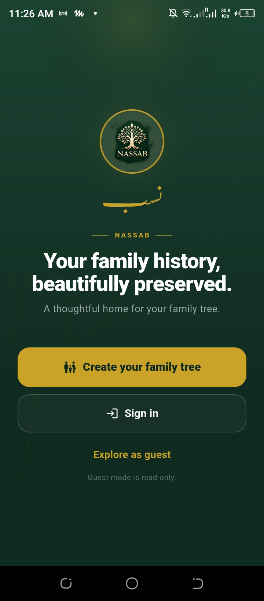
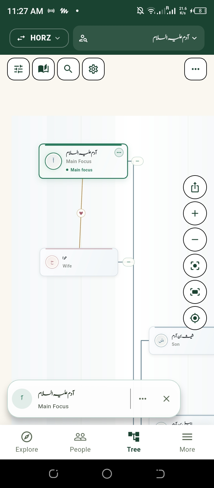
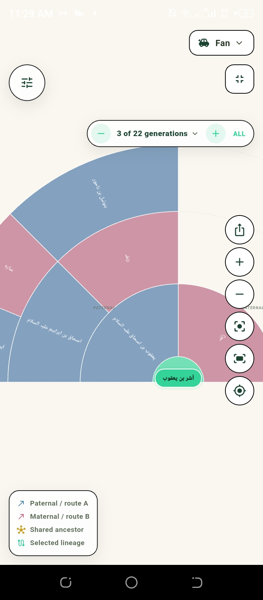

1. Welcome
The opening screen of NASSAB.
Genealogy & heritage preservation
A thoughtful home for your family tree.
NASSAB helps families record, organise, and understand their lineage, including complex relationships that ordinary family trees leave out, with privacy built in from the start.
Currently in closed testing on Google Play.
Closed testing only. The testing link works for people on the approved tester list. If you are not on the list, request access at digital.creator380@gmail.com. The app is not publicly listed yet.


Interactive app experience
A closer look at the tools that help preserve and understand your lineage.
View a lineage as a horizontal tree, move the focus between generations, and keep marriages and children distinct.
What makes NASSAB different
Family history is rarely a simple chain of names. NASSAB is designed to preserve the relationships and context that matter.
◇
Milk-kinship relationships can be represented separately from biological relationships, rather than folded into a generic tree.
◇
NASSAB supports relationship-based analysis and information on relevant kinship considerations. It is not presented as a final religious or legal authority.
◇
Sensitive information about living individuals is restricted according to access permissions, with protected names masked and a guest mode available.
Relationship diagram
An abstract diagram of relationship types. Select a concept to see what it means.
Diagram is illustrative only. It shows relationship types, not a real family, and contains no personal names, dates, or records.
App gallery preview
Explore real screens from the NASSAB application.
The opening screen of NASSAB.
A horizontal view of a recorded lineage.

Generations shown as a fan, with a movable focus.
Privacy and certificates
Exact birthdates and contact details of living individuals are restricted and masked according to applicable privacy rules. Protected female names are masked, and guest exploration is read-only where applicable.
NASSAB lineage certificates carry a SHA-256 hash to support document-integrity checking. SHA-256 helps detect changes to document content when the hash is compared with a trusted reference. A hash alone does not establish who issued the document. NASSAB is not blockchain verified. Certificates are not legally certified proof of ancestry. Document integrity does not establish the historical accuracy of recorded lineage.
How it works
01
Capture family members, relationships, and known details, or submit a record update for review.
02
Examine connections, correct details, and organise evidence. Disputed claims are marked transparently.
03
Maintain accessible family records and generate supported lineage documents with SHA-256 integrity checking.
Closed testing
The NASSAB mobile app is a Flutter and Firebase application, Android package com.cyberfantics.nassab, in Google Play closed testing on the Alpha track, with 30 testers on the tester list. That number is the tester list size, not downloads or active users. The app is not publicly listed yet, and no release date is promised here.